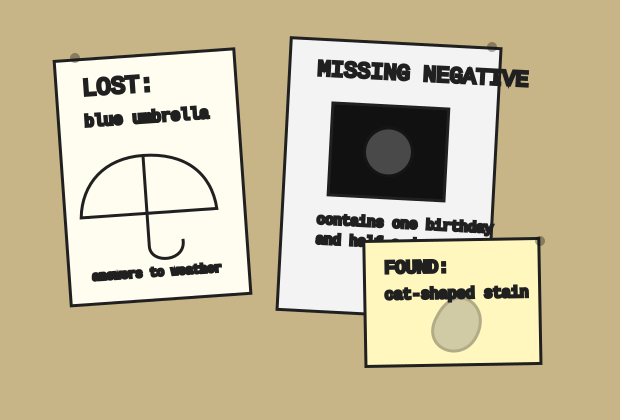

corkboard beside paper cutter
Lost flyer wall, including the flyers lost from the wall
Everything here was copied at least twelve times, which makes it official but not necessarily true.

Lost: blue umbrella
Last seen leaning in the corner during a thunderstorm, speaking very quietly to a wet hat.
Missing negative
One strip, four frames. Contains birthday candles, half a dog, and a stranger reflected in the oven door.
Found: cat-shaped stain
Responds to no name. Moves only between copies. Owner must describe exact coffee.
Wanted: stapler
Red Swingline with silver jaw. Last used to fasten a lease addendum to a menu from 1986.
Tear-tab policy
Take only one tab unless you are returning the missing object. If all tabs are gone, write your phone number on the backing sheet. If your phone number is already there in different handwriting, notify the counter.